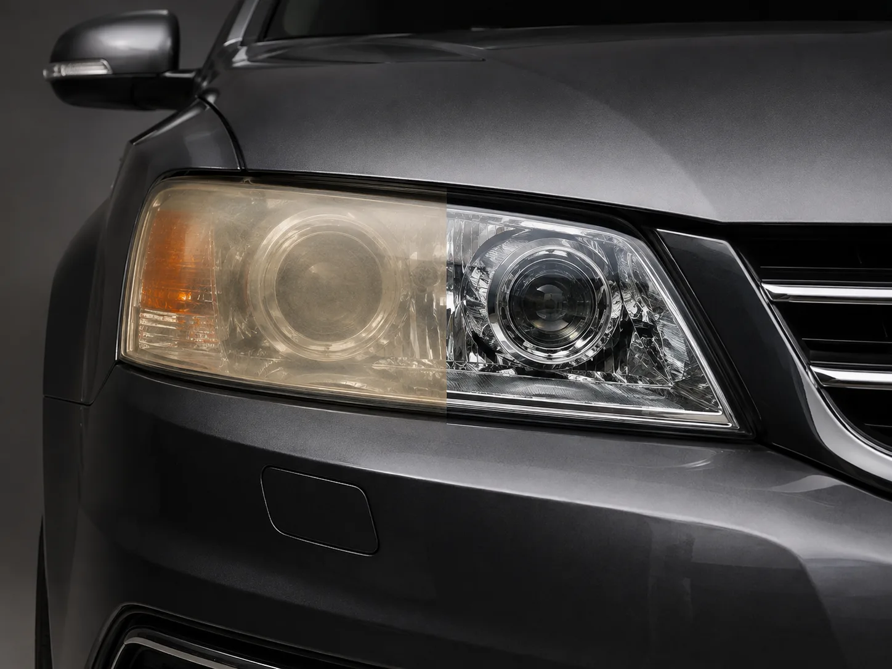

▲ 황변된 헤드라이트 렌즈. 폴리카보네이트 표면의 UV 코팅이 벗겨지면 빠르게 누렇게 변한다 ⓒ Wikimedia Commons (Public Domain)
몇 년 탄 차의 헤드라이트가 뿌옇고 누렇게 변한 걸 보면 단순히 지저분해 보이는 문제로 넘기기 쉽지만, 실제로는 야간 조명 밝기가 눈에 띄게 줄어드는 안전 문제다.
1. 원인 — 폴리카보네이트가 자외선에 약하다
요즘 차량 헤드라이트 렌즈는 유리 대신 가볍고 충격에 강한 폴리카보네이트 소재를 쓴다. 문제는 이 소재가 자외선에 취약해 표면이 서서히 산화된다는 점이다. 제조 단계에서 자외선을 막아주는 UV 코팅을 입혀두지만, 시간이 지나며 세차, 자갈 튐, 자외선 노출이 누적되면 이 코팅층이 벗겨지고, 코팅이 사라진 자리부터 급격히 누렇게 변색된다.
2. 치약으로 닦으면 왜 더 나빠질까

▲ 선명한 헤드라이트 조도(자료사진). 황변이 진행되면 이런 밝기를 기대하기 어려워진다 ⓒ CarPrism
치약으로 헤드라이트를 닦으면 반짝여진다는 속설은 사실 완전히 틀린 말은 아니다. 치약에 든 실리카·탄산칼슘 등 연마 성분이 물리적 마찰로 표면의 흐림을 어느 정도 벗겨내는 것은 맞다. 문제는 이 연마 작용이 흐린 산화층뿐 아니라 표면에 남아있던 UV 코팅층까지 함께 벗겨낸다는 점이다. 치약질 직후 반짝여 보이는 이유도 코팅이 사라진 폴리카보네이트 표면이 그대로 드러났기 때문인데, 이 상태에서 UV 차단 코팅제나 왁스로 곧바로 마무리하지 않으면 자외선에 무방비로 노출돼 이전보다 훨씬 빠르게, 보통 수개월 안에 다시 누렇게 변한다. 즉 치약 자체가 문제라기보다 닦은 뒤 재코팅을 생략하는 것이 진짜 문제이며, 치약을 쓰려면 반드시 UV 코팅제를 함께 준비해야 한다.
3. 셀프 복원 — DIY 키트로 어디까지 가능한가

▲ 복원 전후 비교 이미지(AI 생성). 표면 연마와 UV 코팅을 거치면 이 정도까지 투명도를 되살릴 수 있다 ⓒ CarPrism
시중에는 사포 연마와 코팅제가 함께 들어있는 DIY 헤드라이트 복원 키트가 다이소, 온라인몰 등에서 2~5만 원대에 다양하게 판매되고 있다. 단계별로 거친 사포부터 고운 사포까지 순서대로 연마한 뒤 마지막에 UV 차단 코팅제를 발라 마무리하는 방식이다. 표면 황변이 심하지 않은 초기 단계라면 셀프 복원으로도 눈에 띄게 개선할 수 있다. 다만 셀프 코팅은 내구성이 전문 코팅보다 약해 보통 3~6개월 정도면 효과가 옅어지는 경우가 많으므로, 반짝임이 오래가길 기대하기보다는 주기적으로 재작업한다는 마음으로 접근하는 것이 현실적이다.
4. 전문점 복원 vs 렌즈 교체, 언제 필요한가

▲ 투명하게 복원된 헤드라이트 예시(자료사진). 코팅이 심하게 벗겨진 경우 셀프 복원만으로는 한계가 있다 ⓒ CarPrism
황변이 렌즈 안쪽 깊숙이까지 진행됐거나, 셀프 복원 후에도 금방 다시 뿌옇게 변한다면 전문점의 정밀 연마·코팅 서비스를 받는 것이 낫다. 그마저도 렌즈 자체에 크랙이 가거나 내부까지 변색된 경우라면 복원보다 헤드라이트 유닛 교체가 더 확실한 해결책이다. 비용과 상태를 비교해 판단하는 것이 좋다.
| 방법 | 비용(참고) |
|---|---|
| 셀프 복원 키트(DIY) | 약 2~5만 원 |
| 전문점 정밀 연마·코팅 | 양쪽 기준 약 5~10만 원 |
| 헤드라이트 유닛 교체 | 차종·부품가에 따라 수십만 원(내부 변색 시 약 40~50만 원 이상) |
5. 황변을 늦추는 습관
예방 팁
- 가능하면 그늘이나 실내 주차를 활용해 자외선 노출을 줄이자.
- 세차 시 헤드라이트에 연마 성분이 있는 세제는 피하자.
- 초기 뿌연 증상이 보이면 바로 UV 코팅제를 발라 진행을 늦추자.
6. 정리
체크포인트
- 헤드라이트 황변은 UV 코팅 산화가 원인이다.
- 치약 연마 후 재코팅을 생략하면 코팅이 벗겨진 채 방치돼 더 빨리 나빠진다.
- 초기 단계는 2~5만 원대 셀프 키트로 개선 가능하다(효과는 3~6개월).
- 심하면 전문점 정밀 복원(5~10만 원)이나 렌즈 교체가 필요하다.